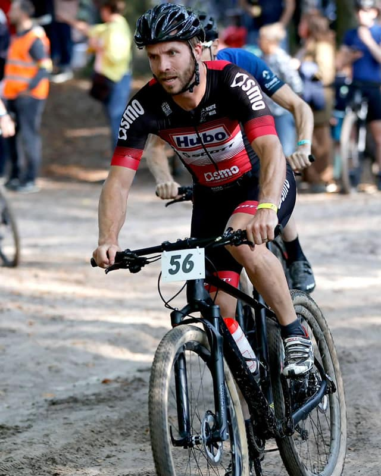
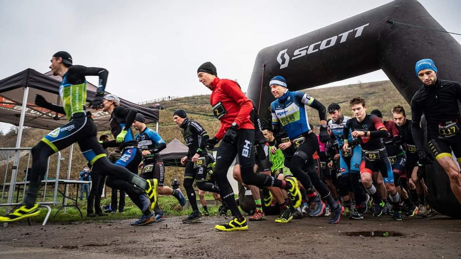
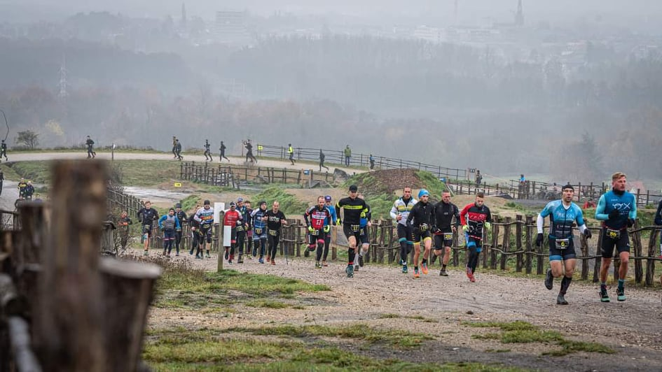
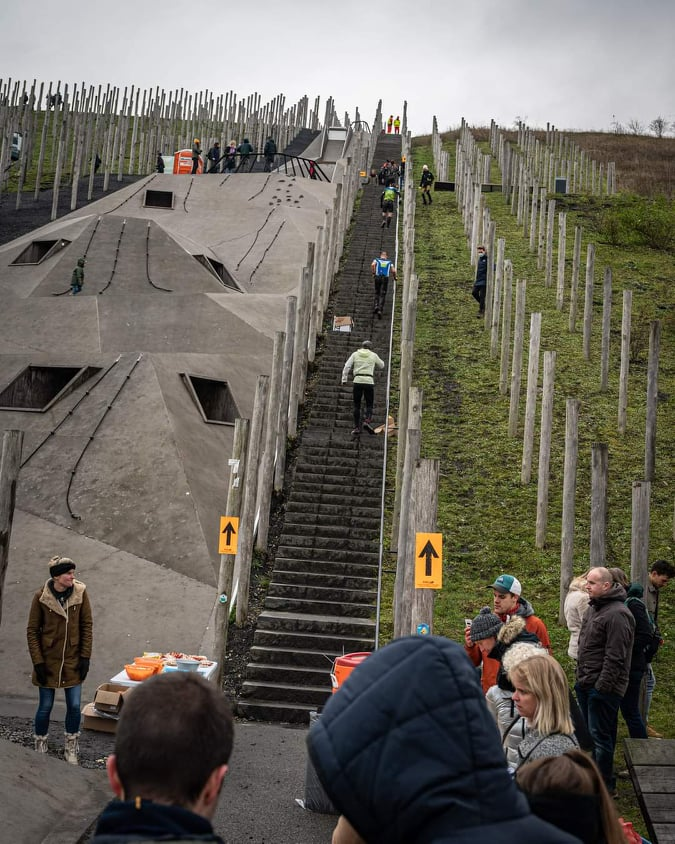

Het parcours doet zijn naam alle eer aan, dat zal later nog blijken. Het was gelukkig dubbel zo warm als de pessimistische voorspellingen van KMI app. Een heerlijke 2,5°C in het bewolkte Beringen verwelkomde de atleten. De wisselzone was opgesteld op een grasstrook met er middenin enkele flinke plassen. Gelukkig was de verzameling regenwater aan mijn plekje iets kleiner en kon ik zowaar mijn schoenen wisselen op een droog stukje grind. Mijn favoriete speaker was ook van de partij en informeerde ons over de nakende start. Zodra het merendeel van de atleten zich aan de juiste kant van de statboog bevond werd er afgeteld voor een dagje genieten in Limburg.
Traditiegetrouw zijn er enkele gedreven duatleten die er direct flink de pees op leggen. Ik laat me niet gek maken en bovendien sta ik ongeveer halfweg in de massa en is de startboog te smal om er met zijn allen gezamenlijk door te lopen. Sportevents heeft gekozen om rustig te beginnen en we lopen eerst een stukje rond de gevreesde mijnterril vooraleer het bergop begint te gaan. Eens we de top bereiken gaat het langs de achterkant bergaf langs enkele glibberige haarspeldbochten, dan rond de hoop mijnafval terug naar de start. Nu lopen we niet meer over het stukje weg maar direct de berg op langs een steile strook die gelukkig voorzien is van een houten afsluiting waaraan we ons naar boven kunnen trekken. De paaltjes krijgen het vandaag zwaar te verduren.

De wisselzone binnen en recht naar de fiets. Op voorhand verwachtte ik ongeveer twee uur te gaan fietsen en had daarvoor twee kleine drinkpullen voorzien. Eentje per uur leek me perfect. Het parcours gaat eerst door het bos over kronkelende zanderige singletracks op en af tussen de bomen. Het is om van te snoepen en er is amper een stuk beton te bekennen. Enkele technisch minder vaardige atleten houden ons een beetje op, maar nog net voor de passage over de terril lukt het om ze achter ons te laten. We gaan met z’n drieën verder. Het is een tactische zet om mijn metgezellen voor te laten gaan. Zo is er eentje die de weg kan verkennen en heb ik er eentje in reserve voor als de eerste over de kop gaat. Niet veel later gebeurt dat ook en zijn we nog met twee. Maar in een iets steilere afdaling gaat het fout in de bocht. Het laatste beetje kanonnenvlees dat ik bij heb gaat tegen de vlakte en ik kan niet anders dan er bij te gaan liggen om te vermijden dat ik er gewoon los overheen ga. Ik kom er van af met een geschaafde bil en ga snel alleen verder. Ik lees vijftig minuten af op het schermpje en bereken dat ik op deze manier 2 drinkbussen te kort kom. De vrijwilligers bieden ons dan wel een verse drinkbus aan vanaf ronde twee maar die bleek jammer genoeg maar voor de helft gevuld. Wel heerlijk drinken uit zo’n verse bus zonder modder.

In de derde fietsronde hoor ik een Limburger vloeken als een ketter. Ik vraag me af of dat wel toegelaten is in het anders zo warme, zachtaardige en gastvrije Limburg. De man gaat zo hard tekeer over de materiaalpech die zijn deel is dat we hem boven op de terril nog horen roepen. Ik bespaar je even de taal die hij gebruikte maar het was op zijn minst 18+. Er valt hier en daar al een druppel en ik kan maar hopen dat het nog even droog blijft. De bochten op de molshoop liggen er glad bij en straks moeten we er nog enkele keren overheen met de loopschoenen onder de voeten. De organisatie verdient trouwens een pluim, want ze deden echt hun best om geen wegel onbenut te laten. We gaan twee keer over de top heen en tussendoor gaat het op en neer om zo optimaal te kunnen genieten van het mijngruis. De modderophoping tussen mijn frame klit intussen zo sterk samen dat mijn achterwiel bij een stukje wandelen bergop weigert nog verder rond te draaien.

De laatste ronde kondigt zich aan door het geluid van een vierde ambulance die opnieuw een onfortuinlijke atleet komt ophalen. Een warme brancard lijkt me nu wel heel aanlokkelijk. Gelukkig vliegt de combinatie van bladeren, modder en grind me vlotjes om de oren in de afdaling en wordt het slepende geluid wat minder om de laatste doortocht in het bos min of meer soepel te laten verlopen. Zo kan ik beginnen aan het laatste lopen. Sportevents zou sportevents niet zijn mochten ze nog een verrassing in petto hebben. De loopronde is gewijzigd tegenover de eerste. We nemen nu de trappen om naar boven te gaan en als kers op taart gaat het naar beneden langs de zwarte mountainbikelus. Ik hoor iedereen rond mij zich afvragen of dit wel een loopparcours is. De afdaling gaat van boom naar boom kronkelt terug omhoog langs gladde modderige wegels en duikt dan weer de dieperik in. Mijn benen vragen elke ronde om er einde aan te maken maar het hoofd weigert. Hans blijft me aanmoedigen elke keer ik bij hem voorbij kom. Hij zegt dat het er nog goed uit ziet, wat me doet vermoeden dat ook hij flink wat modder in zijn ogen moet gekregen hebben. In de laatste ronde begint het flink te regenen en ik bedenk mij dat dit me toch al wat poetswerk aan de fiets zal besparen. De finish wordt bereikt onder een laatste aanmoediging van Hans die fijntjes aan het publiek vertelt dat ik zelfs halve triatlons afwerk in een kleinere tijdspanne.
De hel heeft zijn naam alle eer aangedaan, al moet ik zeggen dat ze het vagevuur wel wat warmer hadden mogen stoken. Mijn fiets staat er nog altijd even vuil bij. Aan de afspuitstand krijg ik te horen dat de douches alleen goed zijn om proper te worden, maar het water is nogal aan de frisse kant. Rillend van de kou ga ik terug naar de auto. Het kost me alle moeite van de wereld om de sleutel uit mijn achterzak te vissen en het slot open te duwen. De verwarming gaat op de hoogste stand en ik lees even de berichtjes van het thuisfront. Coach Tom geeft aan dat ik het goed heb gedaan en dat dit me sterker zal maken en voor mij is dit voldoende al heb ik hem wel gemist vandaag.